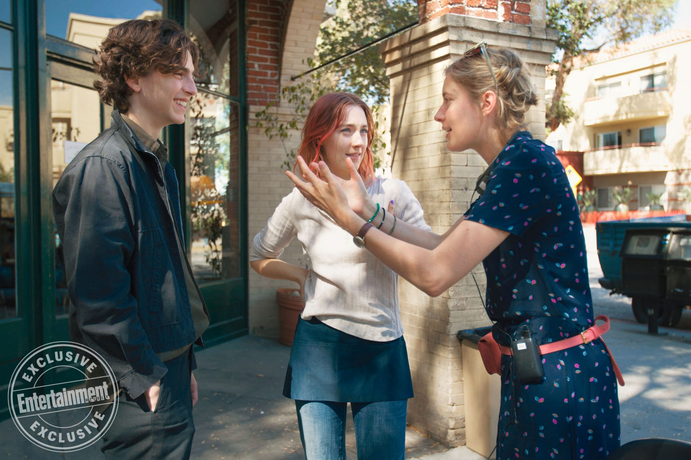
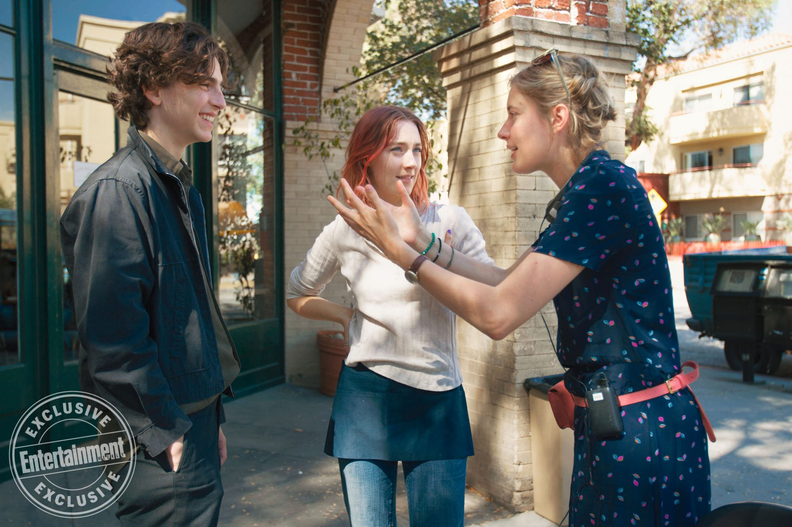
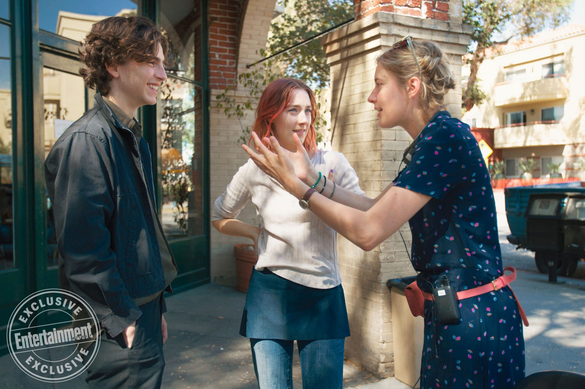

En 2017, Greta sort le film Lady Bird avec Saiorse Ronan dans le rôle principal. Cette comédie dramatique met en lumière la vie d'une jeune ado rebelle et sa relation conflictuelle avec sa mère. L'originalité de ce film repose aussi sur sa fin. La jeune fille ne connaît pas de "bonne" fin et ses problèmes relationnels avec sa mère persiste dans sa vie de jeune adulte.
